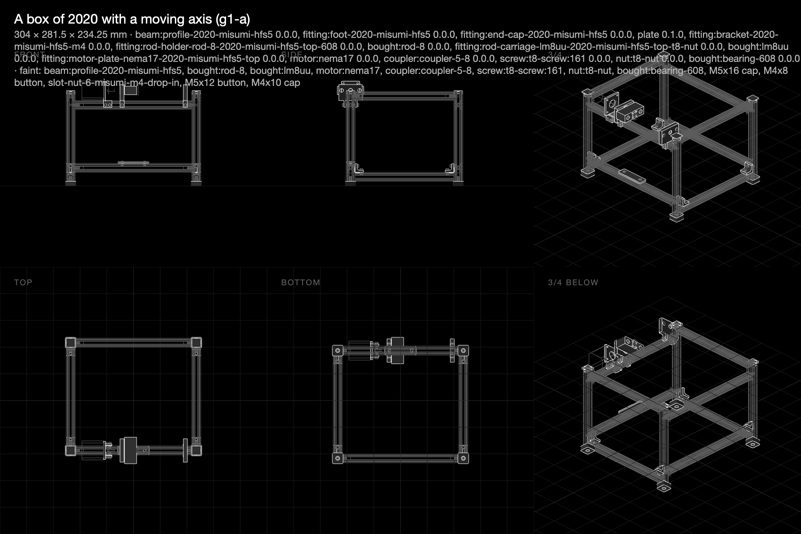
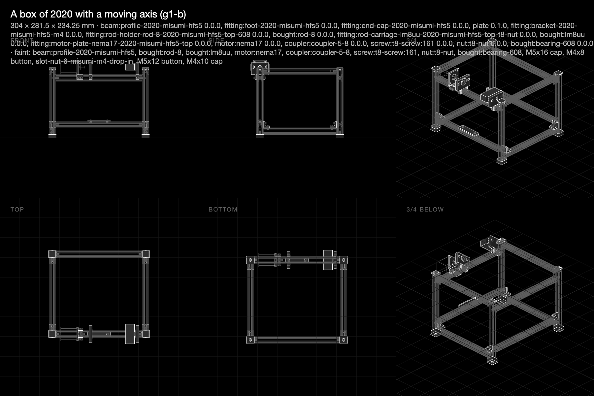
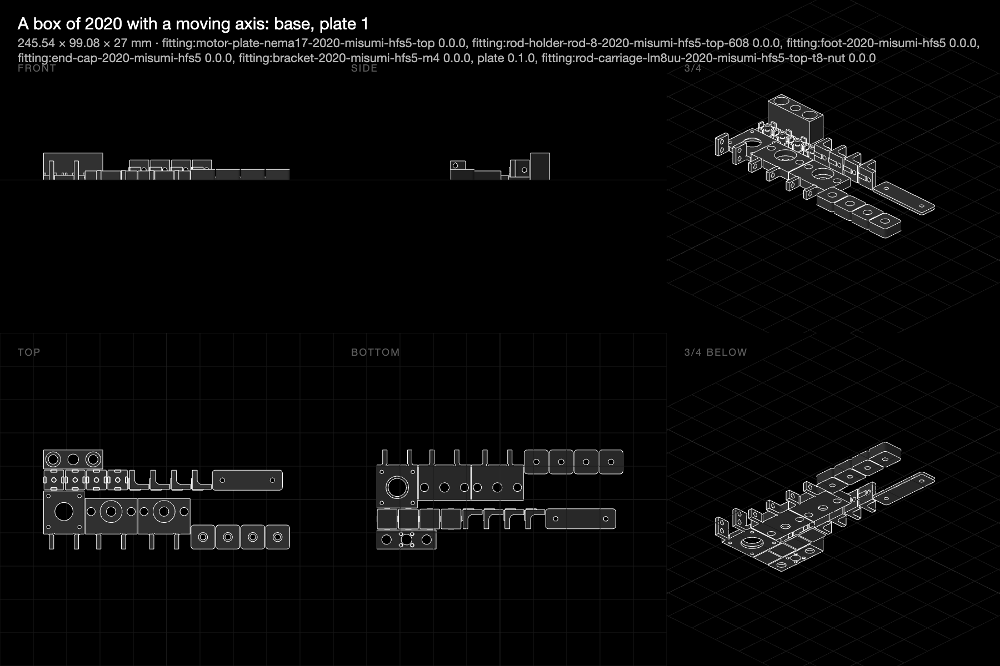

← rulecad archive
A frame of beams with a moving axis: cut, drilled, printed and built from one assembly
17 November 2026 · @rulecad/frames and cad, branch frames-2 of rulecad (issue 263, plan 240) · EXAMPLES chapter 16
A box of aluminium extrusion is the start of many machines: a camera slider, a plotter, a test rig. Drawing one is the easy part. The hard parts are the ones people meet at the bench: which beams to cut to what length, where to drill the access holes, which slot nuts have to be in a slot before a corner closes it, how long each screw is, and what to print. This experiment builds one small frame entirely from a single assembly file and lets the kit work all of that out.
Nothing here has been cut or printed yet. Every figure below is a prediction, and a table of predicted against measured will go here once there is one.

The model
it along its axis, 0 to 99.5 mm.

What it is
- Twelve beams of one profile, MISUMI's 2020 (HFS5-2020), each placed by its two ends: four 200 mm posts, four 260 mm
rails along x and four 220 mm rails along y.
- Twelve blind joins (a tapped rail end, a button-head screw hidden in the post's slot, an access hole for the key)
and four printed corner brackets on the bottom rails along y.
- A printed foot screwed into each post's tapped end, and a printed end cap pushed onto each top end.
- An axis on the top front rail: two 8 mm rods in printed holders, a printed carriage on two LM8UU bearings, a T8 lead
screw driven by a NEMA 17 on a printed motor plate. Every part of it is placed by the guide from the beam's addresses.
- A printed board plate screwed into the bottom front rail's slot on drop-in nuts.
What the checks predict
| Check | Prediction | Rests on |
|---|
| Joins | all 16 meet their faces square and flush; all 24 beam ends joined or capped | geometry |
| Blind join screws | M5x12 button, 10 mm into the rail's own thread, 3.68 N m at most on the post's lips | MISUMI's section; the lips' bearing only (an estimate) |
| Carriage travel | 99.5 mm, swept in 12 steps with nothing colliding | geometry |
| Motor | 127 N at the carriage against 20 N asked, 6.36 times over; 80 mm/s | the motor's and the screw's sets; the nut's friction (an estimate) |
| Motor heat | case at most 53.8 °C at 1.2 A, under PLA's 57 °C | the maker's temperature rise, scaled by the current squared |
| Bearings | the worse LM8UU takes 2.7 N against its 400 N rating | the bearing's set |
| Brackets | 4.8 mm thick, 4.1 g, 2.86 times under PLA's strength at 100 N | coarse finite elements, PLA's strength (community figure) |
| Squareness | each side's diagonals 286.36 mm, accept up to 0.91 mm between them | MISUMI's ±0.5 mm cut tolerance |
| Joint stiffness | blind 1.5 N·m/mrad in bending; bracket 0.095 by finite elements | estimates until the joint rig (issue 264) measures one |
From the assembly to the bench
- Cut list. Seven marks, all twelve beams from one 4000 mm bar with a 1234 mm offcut; a cut-and-drill sheet for
each mark.
- Jigs. Eight printed jigs: a tap guide for the M5 ends, a cut-length stop for each length, two drill guides for
the posts' access holes and a squaring corner of each hand.
- Fasteners. 12 × M5x12 button, 16 × M4x10 cap, 18 drop-in slot nuts, 4 × M5x16 cap, 2 × M4x8 button, and the
motor's and the lead nut's screws, with the packs to buy.
- One plate. All 17 printed parts, 124 g and about 134 minutes, fit one plate of the X1C's 256 mm bed, laid as each
prints and checked as one print.
- Build order. 37 steps from bars to a square frame: the front and back sides built flat and squared by their
diagonals, the rails along y, the back side on as one, the frame squared, then everything else mounted.

Two mistakes, caught
- A trapped nut. The board plate on slide-in nuts, in a slot both of whose ends are closed by joins. The check
fails (frame.nut) and names the drop-in nut that goes in through the opening; the build order is refused, because whichever join is made second shuts the nuts in.
- The wrong slot spacing. The same plate drawn with its holes 30 mm apart, as a 30 series beam's slots are, on a
2040 whose slots are 20 mm apart. Each screw fails fasten.slot: 5 mm off its slot's centre line, where its hole lets it move 0.3 mm.
What building it found in the kit
Writing the chapter turned up six gaps, each fixed with a test:
- A printed end cap's pegs were counted as overlapping the beam they push into.
- A NEMA 17's 24 mm shaft reached past the coupler's middle into the lead screw.
- The slot nut checks were silent on any frame with a moving axis, because each pose was checked without its screws.
- A rods guide had no way to choose its slot nuts, so on a rail closed at both ends its nuts were shut in.
cad plates could not lay out a frame's printed fittings; now each goes on the plate as it prints.- The motor's heat check ignored the driver current it advises setting.
Still to do
- The frame's own sag, sway and lowest frequency under the carriage come with the frame checks (issues 265 to 267).
- Each join's stiffness is an estimate until the joint rig (issue 264) measures one.
- The build order mounts the axis's parts in an order to tidy: the carriage before its rods and bearings, and the feet
and caps scattered through the last steps.